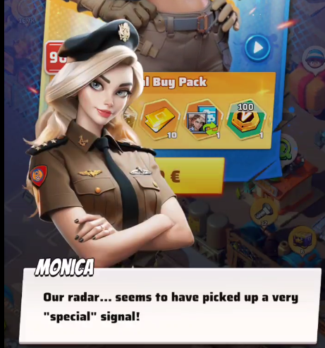
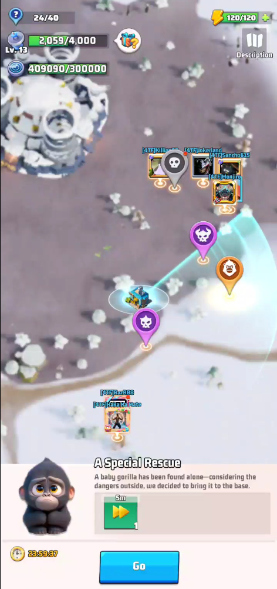
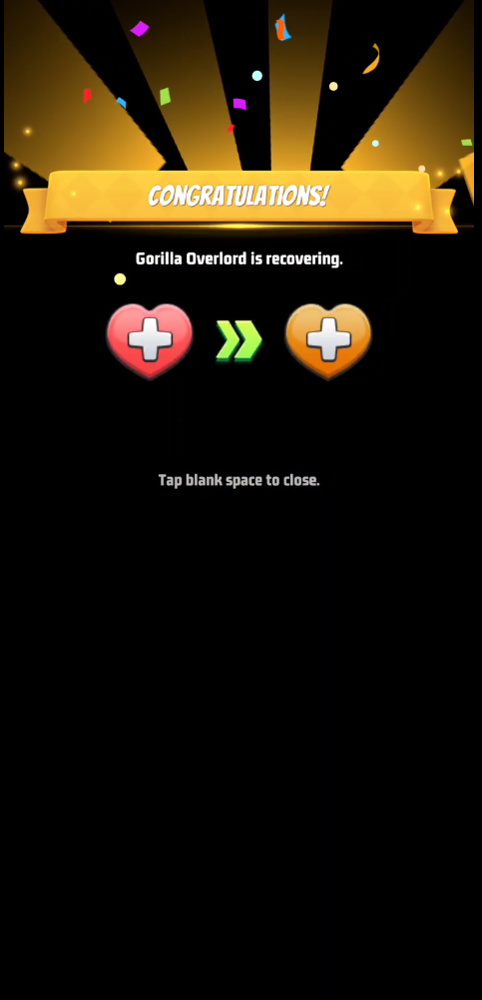
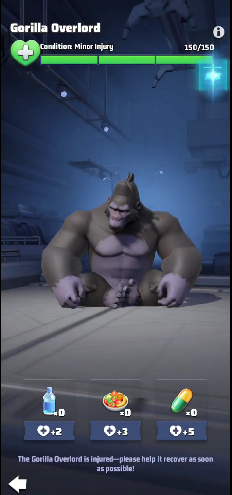
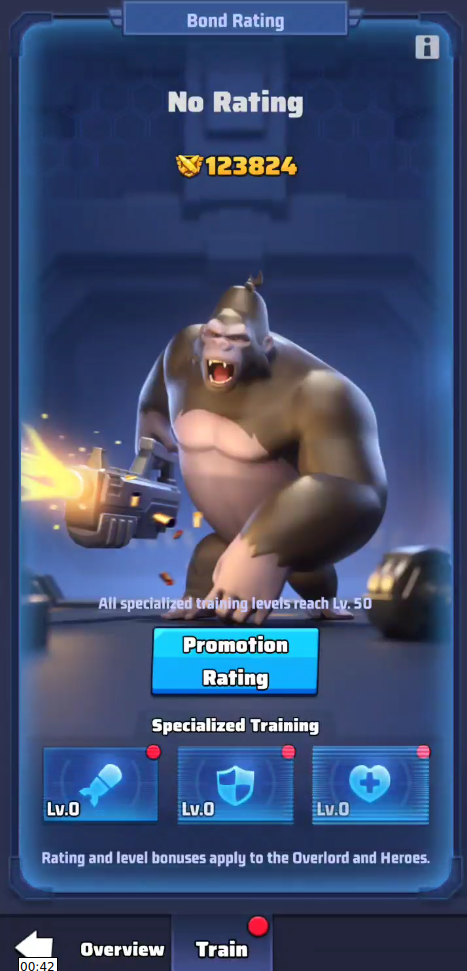
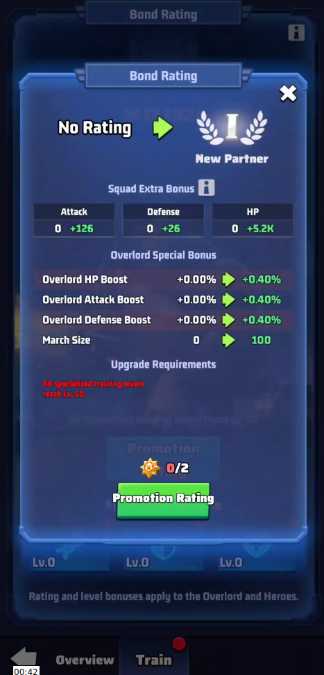
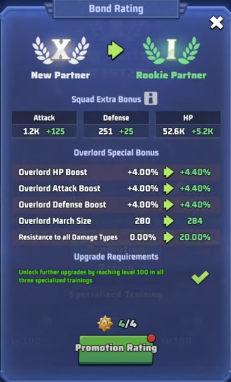
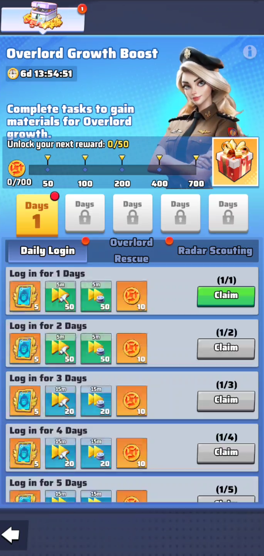
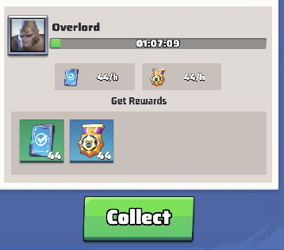

When does the Overlord Gorilla arrive?
The guide places the Overlord Gorilla around Season 2, day 89. Check your server day through the Obelisk timeline book.
The story starts with a baby gorilla, continues with the injured Overlord, four recovery days and the Tactical Institute. Your first major objective is Rookie Partner I.

What to know before spending anything
Before deployment, the gorilla already progresses through Bond Rating and Specialized Training. After deployment you unlock further promotions, skills, Universal Overlord Shards and Overlord Skill Badges.
VS tip: Overlord training items score on Friday, Day 5 of Duel VS, so saving upgrades for that day can help alliance scoring.
Meeting the baby gorilla
A radar mission called A Special Rescue appears with the baby gorilla icon. Completing it unlocks Unexpected Discovery.
The baby points you toward a badly injured adult gorilla. Finish the second mission, return to base and place the Overlord Base.

Four days of recovery
Recovery requires water, food and medicine, mainly from exclusive radar tasks and the baby gorilla. Supply tasks appear 3 times per day, up to 10 total.
Documented progress: Day 1: 50/150; Day 2: 90/150 (Weak); Day 3: 130/150 (Minor Injury); Day 4: 150/150. Rescue supply sources disappear once recovery is complete.

Training begins
Completing recovery unlocks the Tactical Institute, which continuously produces Training Guidebooks.
The Overlord Base initially shows Overview and Training, and you can start investing in the three training branches.

What you can do before deployment
Overview lets you name the gorilla, inspect attributes and power, view skills and check deployment requirements.
The red flag states that Bond Rating: Rookie Partner I is required before the gorilla can join a squad.
Three branches to level separately
Specialized Training has three independent branches: attack, defense and survival/HP. All three must reach key thresholds for promotions.
Training Guidebooks are the recurring currency. Training Certificates are especially required at multiples of 5 and are commonly the main bottleneck.

From No Rating to Rookie Partner I
First target: all three branches to level 50, costing 114,000 Guidebooks + 540 Certificates total. Then promote to New Partner I for 2 Bond Badges.
Second target: all branches to level 100. Levels 51–100 cost 186,000 Guidebooks + 1,260 Certificates total. Complete New Partner II–X for 18 more Bond Badges, then promote to Rookie Partner I for 4 Bond Badges.
1–50
| Levels | Guidebooks / level | Certificates |
|---|---|---|
| 1–20 | 600 | 10 every 5 levels |
| 21–40 | 800 | 20 every 5 levels |
| 41–50 | 1,000 | 30 every 5 levels |
| 3 branches total | 114,000 | 540 |
51–100
| Levels | Guidebooks / level | Certificates |
|---|---|---|
| 51–60 | 1,000 | 30 every 5 levels |
| 61–80 | 1,200 | 40 every 5 levels |
| 81–100 | 1,400 | 50 every 5 levels |
| 3 branches total | 186,000 | 1,260 |

Training does not end at level 100
Level 100 is not the end. Specialized Training, promotions and additional item requirements continue after Rookie Partner I.
Think of two goals: deploying the gorilla and maxing it. Deployment arrives at Rookie Partner I; full development continues much longer.
What changes at Rookie Partner I
Total deployment cost: 300,000 Training Guidebooks + 1,800 Training Certificates + 24 Bond Badges.
Rookie Partner I unlocks four tabs: Overview, Promote, Skill and Train. The gorilla can now be assigned to a squad.

The five main skills
The five main skills are Riot Shot, Overlord’s Armor, Brutal Roar, Furious Hunt and Expert Overlord.
Upgrade them with Overlord Skill Badges; some improvements depend on later promotions.
Free item sources
Free sources include Overlord Growth Boost, Tactical Institute, 3 daily radar missions, Overlord Armed Truck, Zombie Invasion Bosses, stores and General’s Trial Advanced 4–5.
General’s Trial can provide Overlord Skill Badges and Universal Overlord Shards. F2P players should collect every recurring source.
Overlord Growth Boost
Overlord Growth Boost starts with the rescue. Tasks grant Boost Points and milestone rewards.
The guide documents days 1–5, covering the rescue and the start of training.

42 Overlord missions
There are 3 Overlord radar missions per day and 42 missions in the full chain.
Power requirements were reduced compared with early servers. Early stages directly reward Overlord items and rewards evolve as the chain advances.
Gold and Purple Lucky Chests
Completing certain radar missions can award Gold Lucky Chests or Purple Lucky Chests.
These chests provide another source of Overlord materials, with rewards varying by chest type.
Accumulated loot and stages
The system includes Overlord Armed Truck Loot and Overlord Armed Truck Stages. The truck accumulates loot per hour.
Hourly output depends on the Armed Truck stage cleared. The original guide documents stages 1–54 and extra rewards after the first 51 stages.

Level 105–120 bosses
Zombie Invasion bosses from levels 105 to 120 can drop Overlord Gorilla items, especially Training Guidebooks.
What you can buy each week
Weekly availability shown in the guide: Bond Badge 1 VIP + 1 Alliance Store; Guidebooks 6,000 VIP + 6,000 Campaign Store; Certificates 20 Campaign Store; Universal Overlord Shards 5 Alliance Store; Skill Badges 3,000 Campaign Store.
Training Certificates are usually the biggest F2P bottleneck.
Passes, offers and packs
Paid options include the Overlord Training Battle Pass, popup offers, weekly packs and the Overlord Growth Handbook.
The Battle Pass has Free, Advanced and Premium tiers, but by itself does not contain enough resources for deployment. Some offers chain multiple purchases with increasing price and contents.
Extra notes and strategy
F2P progress can be slow, while developers have gradually added more free item sources. Timelines may vary by server and update.
Recommended strategy: prioritize Certificates and Bond Badges, collect every free source, keep the Tactical Institute producing, and spend training items on Friday when Duel VS scoring matters.
Source / Fuente: LastWarTutorial · Overlord Gorilla. Reorganized for the DKGL alliance guide.